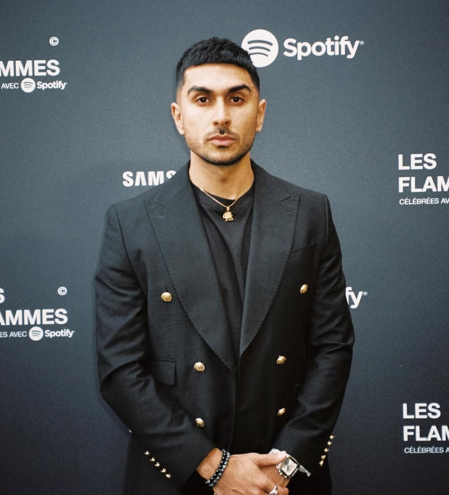
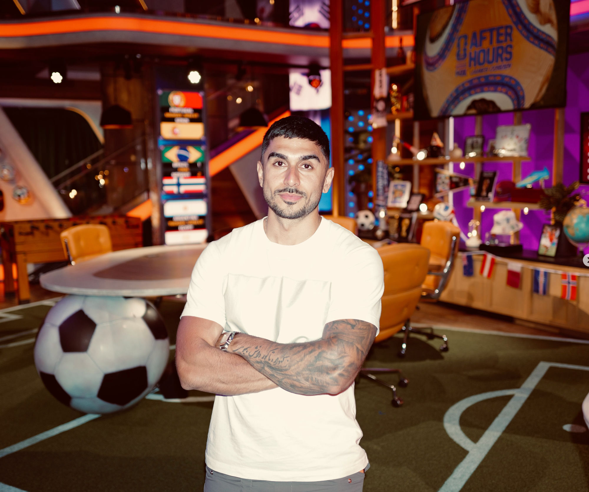
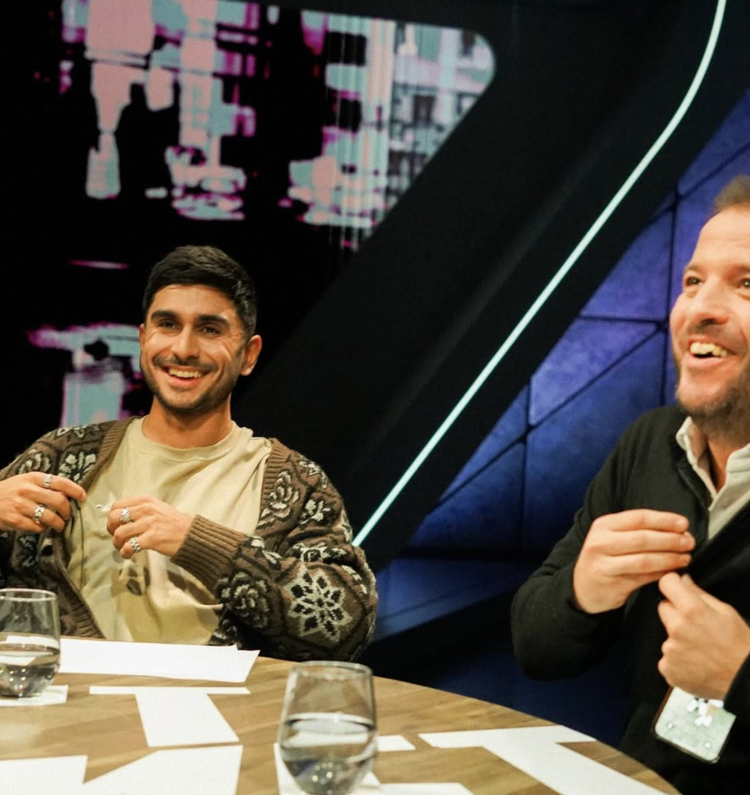
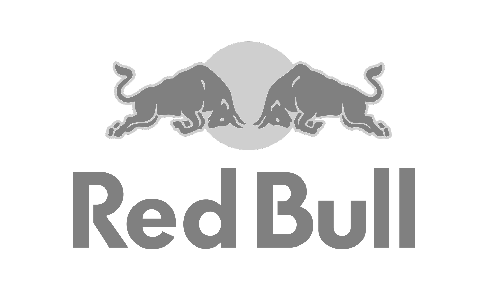
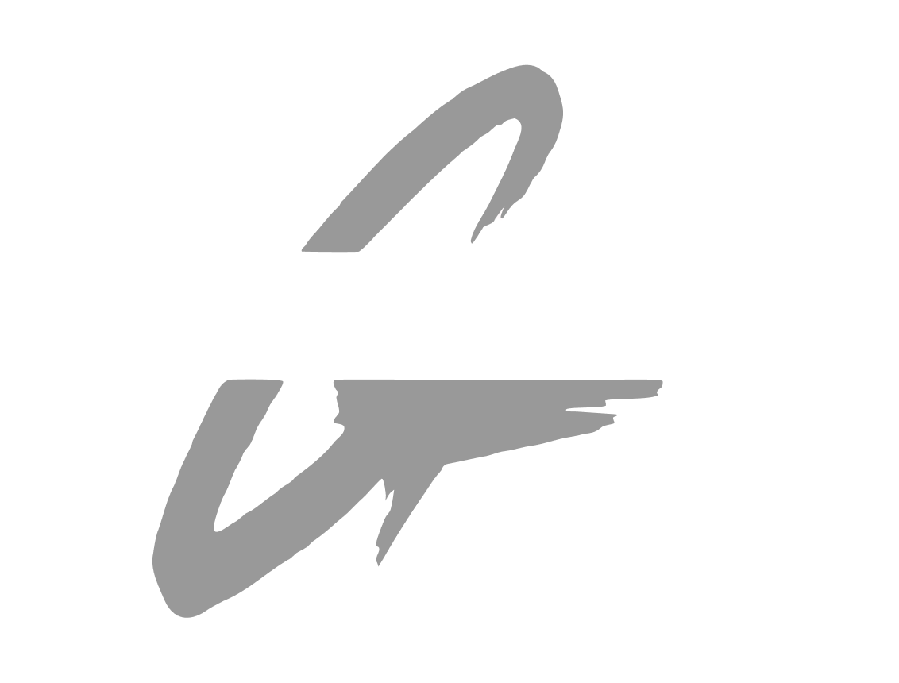

2024
Kick 't Met
Host & Concept · Ziggo Sport
Ziggo Sport talkshow where football meets music and street culture.
Award-winning creative strategist and storyteller working across football and culture.

About
Over the past decade his work evolved from independent media into collaborations with some of the biggest names in sport, media and culture, always guided by the same approach: understand culture first, then create something that belongs within it.


The story
From editor at eighteen to building original shows. Ten years across media, fashion, music, culture and sport.
What I do
Cultural insight, positioning and creative strategy for brands, organisations and talent.
Developing original campaigns, entertainment formats and media concepts from the ground up.
Defining how ideas are positioned, distributed and connected to the audiences they are built for.
Taking ideas from concept to execution across film, television, digital and social.
Developing stories and content rooted in people, culture and entertainment.
Selected work
Host & Concept · Ziggo Sport
Ziggo Sport talkshow where football meets music and street culture.
Founder & Host
Long-form conversations with voices from music, culture and society.
Host · KFC × Sprite
The hot-wing interview format, built for KFC × Sprite.
Host & Concept
Host of Red Bull's rap battle competition.
Creative Director
Creative direction for a Complex × Puma brand film.
Creative Director
Creative direction for the Back to Classics campaign.
Host · G-Shock
Sneaker Shopping, the branded series for G-Shock.
Host
Fashion meets culture in a Zalando content series.
Creative & Host
Social-first content series as creative and host for adidas.
Plus FIFA · AFCON · Telfaz11 · Puma Creative Camp · Rabobank · Kick 't Net
Highlights
Years across creative industries
Industries worked across
CONVO episodes
Brand collaborations
Selected partners




Recognition
Best Journalism Award · CONVO Talkshow
Nomination · Kick 't Met
Let's work together
© 2026 Armin Shah · Creative strategist & storyteller